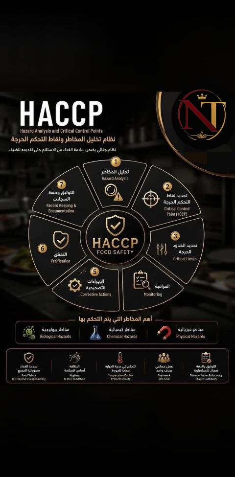

A practical breakdown of the 7 principles that keep food safe — from receiving through to service.
HACCP — Hazard Analysis and Critical Control Points — is the food safety system used in commercial kitchens worldwide. It's not paperwork for its own sake. It's a structured way of identifying where food can become unsafe, and building controls into the process before contamination happens, rather than catching it after a guest has already eaten the meal.

Every HACCP system, regardless of the kitchen or cuisine, is built on the same seven principles:
| Hazard Type | Examples | Typical Control |
|---|---|---|
| Biological | Bacteria, viruses, parasites | Temperature control, cooking, cooling times |
| Chemical | Cleaning agents, allergens, pesticide residue | Labelling, storage separation, supplier checks |
| Physical | Glass, metal, bone fragments, packaging | Visual inspection, metal detection, staff training |
In day-to-day operations, CCPs are rarely abstract — they map directly onto real moments in the kitchen:
Food Safety is everyone's responsibility, hygiene is the foundation, temperature control protects quality, and documentation ensures continuity when teams change shifts, managers move on, or auditors walk in unannounced. A kitchen that treats HACCP as a living system — not a binder on a shelf — protects guests, protects the brand, and protects the license to operate.
HACCP works because it forces a kitchen to think ahead of the hazard, not behind it. Build the seven principles into training, into daily checklists, and into how every shift starts and ends — and food safety stops being a document you produce for auditors, and becomes simply how the kitchen runs.